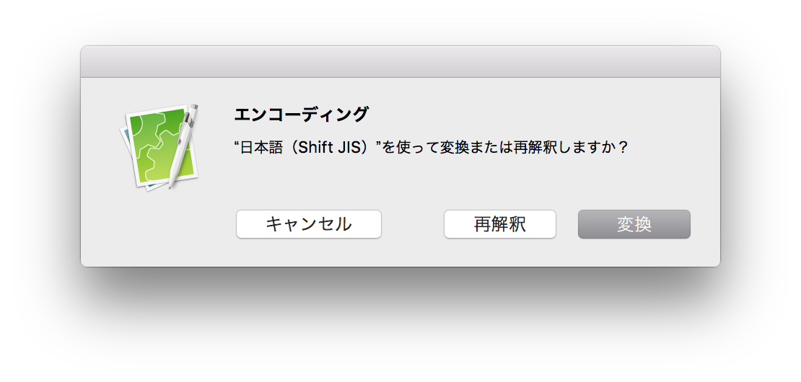

CotEditorで文字化けする場合
文字化けは、ファイルのテキストエンコーディングをCotEditorが正しく認識できなかった場合に発生します。次の手順でエンコーディングを変更してください。
- 「フォーマット」メニューの「エンコーディング」を開き、適切なエンコーディングを選択します。
- 「再解釈」をクリックします。

ダイアログのボタンの動作は、次の通りです。
- 変換
- 現在のテキストを指定されたエンコーディングに変換します。
- 再解釈
- 指定されたエンコーディングでファイルを開き直します。
- キャンセル
- 操作を取り消します。書類には何も変更は加えられません。
- エンコーディングの変更は、ステータスバーのエンコーディングメニューからも行うことができます。
- 自動認識する際のエンコーディングの認識順序を調整することで、文字化けが発生する頻度をより少なくできます。
→ テキストエンコーディングの優先順位を変更する
- 設定で「書類中のエンコーディング宣言を参照」が有効になっていると、エンコーディングの自動認識で書類中にある
encoding=, @charsetなどの宣言として記述されているエンコーディングが優先されます。
→ エンコーディング宣言を参照する